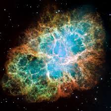

Disk Outflows
3D GRMHD collapsar simulations exploring how magnetic fields and black hole spin shape disk-driven outflows and jet formation.
Open ProjectResearch
Selected projects in computational astrophysics, black hole formation, and survey science.
3D GRMHD collapsar simulations exploring how magnetic fields and black hole spin shape disk-driven outflows and jet formation.
Open Project
GR1D+STIR helium-star collapse models exploring how progenitor structure, angular momentum, and turbulence shape black hole formation and collapsar pre-engine conditions.
Open Project